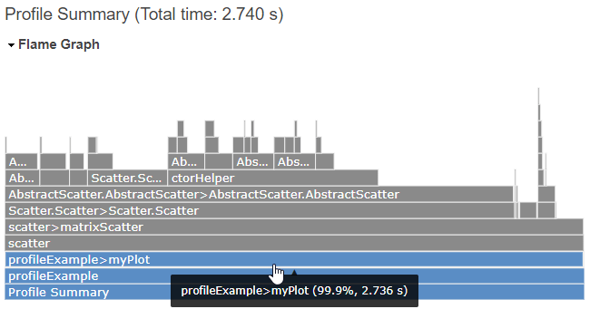
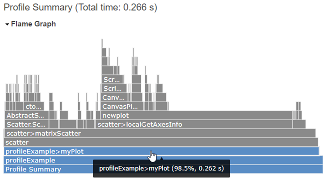
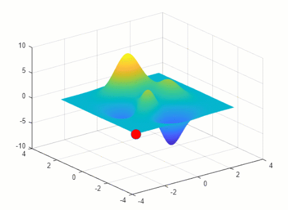

Improve Graphics Performance
When you create data visualizations, you can use multiple strategies to improve performance. This topic provides strategies for identifying performance issues and choosing more efficient coding patterns and features. Use any of the strategies that are helpful for the type of graphics you create.
Identify bottlenecks in your code — Use the Profiler to find which functions have a longer execution time.
Avoid re-creating objects and unnecessary searches — Rather than create objects repeatedly in a loop, create one instance of each object and store them as variables. Then you can use a loop to modify only the properties of the objects that change.
Preallocate arrays — Preallocate arrays before a loop rather than adding new elements inside the loop.
Use newer features for speed — Consider updating your code to use newer, faster, and more flexible functionality.
Disable unnecessary features — Consider disabling the features you do not need that are enabled by default.
Use
drawnowstrategically — Identify extraneousdrawnowcommands that can impact performance, and learn different ways to use the command effectively.
Identify Bottlenecks in Your Code
Use the MATLAB® Profiler app to identify the functions that have a longer execution time. You can then evaluate those functions for possible performance improvements.
For example, create a scatter plot of 10-by-500 arrays using the
myPlot function.
function myPlot x = rand(10,500); y = rand(10,500); scatter(x,y,"blue"); end
Use the Profiler to time the execution of the myPlot function. The
code takes about 2.7 seconds to execute.
profile on myPlot profile viewer

Because the x and y arrays contain 500 columns
of data, the scatter function creates 500
Scatter objects. In this case, you can plot the same data by
creating one object with 5000 data points instead.
function myPlot x = rand(10,500); y = rand(10,500); scatter(x(:),y(:),"blue"); end
Profiling the code again shows that the updated function takes less than 0.3 second to execute.
profile on myPlot profile viewer

To learn more about using the Profiler, see Profile Your Code to Improve Performance.
Avoid Re-Creating Objects and Unnecessary Searches
If you create graphics objects that you intend to modify later in your code, you can improve performance by using these best practices:
Update only the data you need to change by setting properties, rather than re-creating objects.
Save objects as variables so you can access them later, rather than having to search for them. Creating variables for later access is more efficient than searching the graphics hierarchy with the
findobjorfindallfunctions.
For example, this code plots a surface and a marker and stores the marker as a
Line object named m. Later, a
for-loop updates the marker coordinates. At each iteration of the
loop, only the marker changes position. All of the data associated with the surface plot
and many of the marker properties remain the same at each step. Rather than updating all
the data by calling the surf and plot3
functions multiple times, update only the properties that control the position of the
Line object.
[sx,sy,sz] = peaks(500); nframes = 490; surf(sx,sy,sz,EdgeColor="none") hold on m = plot3(sx(1,1),sy(1,1),sz(1,1),"o", ... MarkerFaceColor="red", ... MarkerSize=14); hold off for t = 1:nframes m.XData = sx(t,t); m.YData = sy(t,t); m.ZData = sz(t,t) + 0.5; drawnow end

To animate data that grows in a loop—for example, to plot data that you collect over
time—consider creating an animatedline object and add points to
the line using the addpoints function (see Use drawnow Strategically for an
example). Alternatively, consider updating your data in segments. For more information
on this approach, see Segmenting Data to Reduce Update Times.
Preallocate Arrays
Preallocate arrays and fill the elements in a loop. This technique is more efficient than appending new elements to the end of an array in a loop.
For example, to create an array of axes objects in a loop. Start by creating an array
of GraphicsPlaceholder objects using the gobjects function. Then replace the
GraphicsPlaceholder objects with the axes objects in a
loop.
numaxes = 100; ax = gobjects(numaxes,1); t = tiledlayout(10,10); for i=1:numaxes ax(i) = nexttile; end
Similarly, you can initialize a plot using NaN values and populate
the data later in a loop. For example, plot a line of 1000 NaN
values. Then replace the NaN values with numbers by setting the
XData and YData properties of the line in a
loop.
x = NaN(1000,1); y = NaN(1000,1); p = plot(x,y); hold on for i = 1:10:1000 p.XData(i:i+9) = i:i+9; p.YData(i:i+9) = rand(10,1); drawnow end hold off
Use Newer Features for Speed
One way to improve performance is to update your code to use newer features when possible. Some newer features replace older features, and others are optional enhancements that can speed up your code. This section describes some of the newer features to consider.
Use Dot Notation Instead of set and get
Using dot notation to set and get the properties of graphics objects provides
better performance than the set and get
functions. For example, create a figure, get the Color property,
and store the value in the clr variable. Then set the
Name property of the figure to "My
Figure".
f = figure;
clr = f.Color;
f.Name = "My Figure";Display Figures in Tabbed Containers
Since R2025a
By default, figures appear as tabs in a figure container. You can customize the layout by rearranging tabs or view multiple figures simultaneously by arranging them in tiles. The figure container has performance advantages because it provides one shared set of resources (such as the figure toolstrip) for multiple figures. By contrast, opening multiple undocked figures requires a separate set of resources for each figure, which takes additional time to load. For better performance, consider keeping your figures in the container and avoid undocking them.
Use tiledlayout Instead of subplot
Use the tiledlayout function to display a tiling of plots in a figure. The
tiledlayout function creates layouts that are more
customizable and configurable than the layouts created by the
subplot function. To improve performance when using a tiled
chart layout, follow these best practices:
Specify a fixed-size grid when you create the layout. For example, to create a 2-by-2 tiling, use
tiledlayout(2,2)instead oftiledlayout("flow"). Specifying a fixed-size grid reduces the calculations needed to determine the size and placement of each axes object.Set the limits of each axes object using the
xlim,ylim, andzlimfunctions so that MATLAB does not recalculate the limits when you resize the figure or add data to your plots.To improve the axes creation time, enable a shared axes toolbar in the tiled chart layout using the
axtoolbarfunction. Use only the shared axes toolbar for interactivity and disable the other methods. Disable the axes toolbar on each of the axes objects usingax.Toolbar=[], whereaxis one of the axes objects. Disable the built-in axes interactions using thedisableDefaultInteractivityfunction.
Limit Resolution for Displayed Images
Since R2022b
When you work with an image, you can set the MaxRenderedResolution property to control the maximum resolution
MATLAB uses to display the larger dimension of the image. The smaller
dimension adjusts to preserve the aspect ratio. The value you specify affects the
on-screen display, but it does not affect the image data, which is stored in the
CData property of the image.
To display the image at full resolution, set the
MaxRenderedResolution property to "none" .
Specify a number to limit the size of the displayed image. Larger numbers (and
"none") provide higher quality images, but the initial images
might take longer to render. Smaller numbers provide downsampled images, but they
render faster.
Images can render faster if you specify a value that is smaller than the largest dimension of the original image, particularly in bandwidth-constrained situations. However, if you specify a value that is only one or a few pixels smaller, the initial rendering of that image might take longer than rendering it at full resolution.
For example, display peppers.png (which is a 384-by-512 RGB
image) with a maximum of 128 pixels along the larger
dimension.
imdata = imread("peppers.png");
imagesc(imdata,MaxRenderedResolution=128)Note
If you use the imshow function to display an
image in MATLAB
Online™, the function uses a MaxRenderedResolution
value of 512.
Use Built-In Axes Interactions Instead of Older Interactions
Use the built-in axes interactions for panning, zooming, and rotating. These
interactions are available by default and are faster and more responsive than the
pan, zoom, and
rotate3d functions. These interactions are also much faster
and responsive than callback functions such as
WindowButtonMotionFcn.
You can also customize the interactions using the
InteractionOptions property of the axes. For more information
about using and customizing built-in interactions, see Control Chart Interactivity.
Disable Unnecessary Features
Another way to improve graphics performance is to disable features that you do not intend to use. This table describes the features that can impact performance regardless of whether you use them.
| Feature | Effect on Performance | How to Improve Performance |
|---|---|---|
Built-in axes interactions | Enabled by default, the built-in axes interactions can impact axes creation time. If you do not need to interact with your plots, you can improve performance by disabling these interactions. | Disable the interactions by passing the axes to the |
Axes toolbar | Enabled by default, the axes toolbar can impact axes creation time. If you do not need to interact with your plots, you can improve performance by disabling the axes toolbar. | Disable the axes toolbar by setting the
ax = axes; ax.Toolbar=[]; |
Automatic axes limits calculation | Enabled by default, the limits calculations can affect the time it takes to update the tick labels when you create plots or update existing plots. The axes limits calculations can cause flicker in animations. If you know the range of your data before you plot it, you can improve performance by disabling the automatic limits calculation. | Disable the automatic limits calculation by setting the axes
limits to static values. Use the Set the limits (or the
associated mode properties) after you plot into the axes for the first
time. Otherwise, the plotting functions might reset the property
values. Call the |
Automatic legend updates | Enabled by default, the automatic legend updates can affect the time it takes to draw updates in the figure when you add or delete objects in the axes. | Create the legend after creating all the objects in the axes. |
Use drawnow Strategically
When you create or modify graphics objects in your code, those changes might not
appear in the figure immediately. In many cases, you might want to force an update using
the drawnow command. However, this command
takes time to execute, and frequent use can impact performance. When writing your code,
consider where the drawnow command is useful and where it is
unnecessary.
After changes occur in one or more figures, those figures automatically update in
these situations (so you do not need to use a drawnow command):
When the
pause,figure,uifigure, orgetframefunctions execute.When your code queries an automatically calculated property (a property that depends on other properties). For more information, see Optimize Code for Getting and Setting Graphics Properties.
When your code finishes execution and returns control to the MATLAB Command Window or stops at a breakpoint in the debugger.
Other situations require drawnow to produce the intended effect.
This table describes the most common situations where using a
drawnow command is useful.
| Situation | Description | Example |
|---|---|---|
Create an animation with a relatively small number of iterations | To display an animation using a relatively small number of
frames, create an object and update its properties in a loop. To
display the changes at each loop iteration, add a
| Create an animation of a marker moving along a line. Change the
coordinates of the marker at every iteration of a loop, and call
x = linspace(0,10,500); y = sin(x); % Plot a line and a marker plot(x,y) hold on mkr = scatter(x(1),y(1),[],"red","filled"); hold off xlim([0 10]) ylim([-1 1]) % Move the marker along the line for i = 2:length(x) mkr.XData = x(i); mkr.YData = y(i); drawnow end |
Make a long-running animation faster. | To improve the performance of long-running animations, consider
using Consider using
| Create an animated line that adds 50,000 data points in a loop.
Call Inside the loop, use
h = animatedline; xlim([0 4*pi]) ylim([-1 1]) x = linspace(0,4*pi,50000); drawnow for i = 1:length(x) y = sin(x(i)); addpoints(h,x(i),y); drawnow limitrate end |
Selectively update a figure | Eliminate unnecessary updates by selectively updating the figure only when certain conditions are true. | Create an animation loop that iterates on the variable
n = 500; ax = axes; xlim([1 n]) ylim([1 n]) hold on for i=1:n if isprime(i) scatter(i,i,[],"red","filled") drawnow end end hold off |
Display the initial state of the figure and axes before starting a fast-running animation. | In some cases, an animation loop can finish before the figure
and axes objects are completely initialized and visible. In these
cases, only the final state of the animation displays. Calling
| Create an animation of 2000 points using
figure axes x = linspace(0,4*pi,2000); h = animatedline; xlim([0 4*pi]) ylim([-1 1]) drawnow for i = 1:length(x) y = sin(x(i)); addpoints(h,x(i),y); drawnow limitrate end |